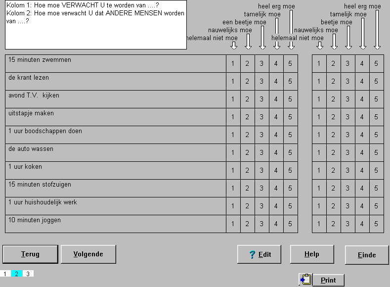

1 of 2 antwoord kolommen, bij 2 kolommen splitsing willekeurig aan te brengen
1 of 2 antwoord kolommen, bij 2 kolommen splitsing willekeurig aan te brengen
 Cijfers in de antwoordvelden naar keuze uitschakelbaar
Cijfers in de antwoordvelden naar keuze uitschakelbaar
 Kolomteksten zijn selectief aan te brengen en volkomen vrij in te voeren
Kolomteksten zijn selectief aan te brengen en volkomen vrij in te voeren
 Pijlen worden automatisch getoond als betreffende antwoordkolom een tekst bevat
Pijlen worden automatisch getoond als betreffende antwoordkolom een tekst bevat
 Letterfont van kolomtekst en van de vragen zijn onafhankelijk van het vragenlijstfont instelbaar
Letterfont van kolomtekst en van de vragen zijn onafhankelijk van het vragenlijstfont instelbaar
 Aantal vragen per pagina (en dus beschikbare vraagruimte) vrij instelbaar
Aantal vragen per pagina (en dus beschikbare vraagruimte) vrij instelbaar
 Ruimte tussen de vragen vrij instelbaar
Ruimte tussen de vragen vrij instelbaar
 Beantwoording zowel met toetsenbord als muis mogelijk (beide met automatische doorloop faciliteit)
Beantwoording zowel met toetsenbord als muis mogelijk (beide met automatische doorloop faciliteit)
 Scores per individuele vraag instelbaar
Scores per individuele vraag instelbaar
 Edit-faciliteit, exact gelijk aan de uiteindelijke weergave (WYSIWYG)
Edit-faciliteit, exact gelijk aan de uiteindelijke weergave (WYSIWYG)
Plaatje vervangen door beantwoord plaatje, teksten beter uitgelijnd, niet alle kolom teksten/pijlen

Het is raadzaam (doch absoluut niet noodzakelijk) onderstaande volgorde zo mogelijk aan te houden.
- font van de algemene tekst instellen (geldt voor de gehele vragenlijst)
- aantal antwoord-kolommen en al dan niet dubbele kolom instellen
- vragen invoeren
- individuele vraaghoogte / font van de vragen aanpassen / tekst-layout van de vragen bijstellen
- kolomteksten invoeren / font van de kolomteksten aanpassen
- resterende details instellen (nummers zichtbaar)
- scores toevoegen
- conditioneel overslaan desgewenst toevoegen
Ten behoeve van het editten, kunnen alle objecten zichtbaar gemaakt worden, dit kan middels het hoofd-popup-menu worden aan-/uitgezet.
figuur wijzigen met alle popup's (in werkelijke grootte, zodat details zichtbaar), inhoud met groter font, zodat niscchien verkleind kan worden
Font van de vragenlijst instellen
Aantal kollommen / splitsing instellen
Vragen invoeren / wijzigen
tabs / font
Vragen invoegen
Vragen verwijderen
Vraaghoogte instellen
Bij dit vraagtype kan enkel de vraaghoogte middels een (rode) splitter worden ingesteld. De antwoordhoogte dient altijd via de rechter-muistoets en het bijbehorende popup-menu te worden ingesteld (dit komt omdat niet de antwoordhoogte, maar het aantal antwoorden wordt ingesteld in dit vraagtype).
Vraagfont instellen
Kolomteksten invoeren
Kolomteksten-font instellen
Antwoordnummers aan/uit zetten
Scores Toevoegen
Conditioneel Overslaan Toevoegen
© Copyright Instrumentele Dienst, 1999-2004